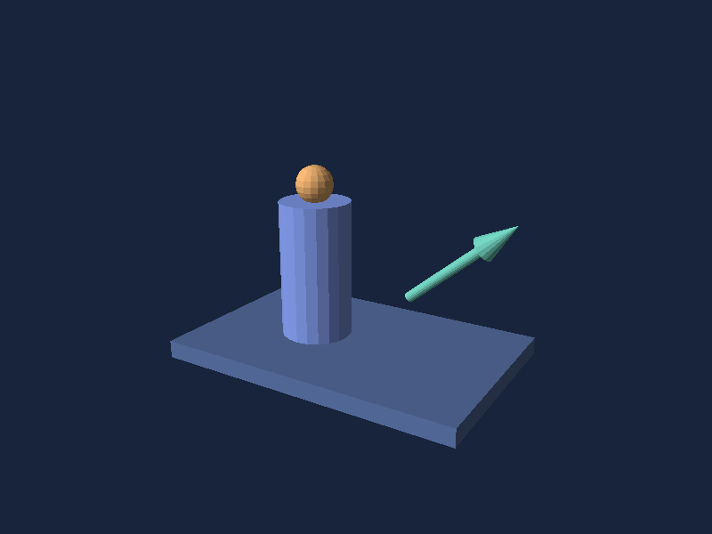

Five examples to learn from
Create the two-shape scene in Getting started first, then follow these five examples in order. Each adds a different API concept, progressing from primitives to a mechanism with coordinated moving parts. Each file creates a scene, fits its camera and supplies a time-based animation. The gallery adds orbit, zoom and selection through the same SceneView you use in an app.
| Example and source | What to learn | Motion |
|---|---|---|
| Equipment | Named primitives, groups, arrows and labels | Output vector sweeps |
| Telemetry | Orthographic camera and data-driven height and color | Bars change within a fixed scale |
| Surface | Indexed mesh construction and depth picking | Sample marker follows a wave |
| Robot Arm | Nested transforms and selectable joints | Shoulder and elbow articulate |
| Gantry Crane | Linked motion with fixed structure and reusable geometry | Carriage traverses while the hoist lifts its load |



Telemetry and Gantry Crane use synthetic values, not live sensors or physical simulations. In an application, replace the time functions with measured values. Reuse immutable meshes and keep child order stable so selection follows the same logical part after replacement. The small shared helpers live in DemoScenes.cs.
Robot Arm demonstrates child transforms relative to a parent. Gantry Crane combines group translation with state-dependent part dimensions: the cable changes length as the load rises. They teach different uses of the same hierarchy API. The examples share their animation and color helpers rather than repeating them in each file.
The gallery page owns the UI timer, lowers render resolution during animation and pauses on backgrounding. It targets 60 updates per second; this is not a displayed-frame-rate guarantee. Press Animate after returning to the app.
Render without MAUI
dotnet run --project tests/Simple3D.Core.Tests -c Release -- --render-images Equipment equipment.ppm
dotnet run --project tests/Simple3D.Core.Tests -c Release -- --render-images --all output
This exports initial still frames as binary PPM and skips the test run. Convert them to PNG with python3 scripts/render-doc-images.py to regenerate the documentation images. Rendering supports opaque triangles and fixed directional flat lighting; see limits before choosing a workload.